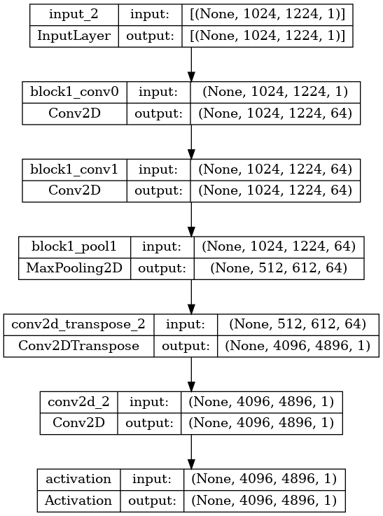

mpl.rcParams['image.cmap'] = 'gray'Model Developement
Different models will be developed here and tested here
Fully Convolutional Network
from tensorflow.keras.applications.vgg16 import VGG16
from tensorflow.keras.layers import Conv2D, Conv2DTranspose, Input
# Load the VGG16 model
vgg16 = VGG16(weights='imagenet', include_top=False, input_shape=(224, 224, 3))
# Freeze the layers in the VGG16 model
for layer in vgg16.layers:
layer.trainable = False
# Define the input layer
input_layer = Input(shape=(224, 224, 3))
# Get the output of the VGG16 model
vgg_output = vgg16(input_layer)
# Add convolutional layers on top of the VGG16 model
conv1 = Conv2D(4096, (7, 7), activation='relu', padding='same')(vgg_output)
conv2 = Conv2D(4096, (1, 1), activation='relu', padding='same')(conv1)
conv3 = Conv2D(2, (1, 1), activation='softmax', padding='same')(conv2)
# Define the decoder
upsample1 = Conv2DTranspose(2, (4, 4), strides=(2, 2), padding='same')(conv3)
conv4 = Conv2D(512, (3, 3), activation='relu', padding='same')(upsample1)
conv5 = Conv2D(512, (3, 3), activation='relu', padding='same')(conv4)
upsample2 = Conv2DTranspose(2, (4, 4), strides=(2, 2), padding='same')(conv5)
conv6 = Conv2D(256, (3, 3), activation='relu', padding='same')(upsample2)
conv7 = Conv2D(256, (3, 3), activation='relu', padding='same')(conv6)
upsample3 = Conv2DTranspose(2, (16, 16), strides=(8, 8), padding='same')(conv7)
# Create a new model with the VGG16 encoder and the decoder
fcn = Model(inputs=input_layer, outputs=upsample3)Downloading data from https://storage.googleapis.com/tensorflow/keras-applications/vgg16/vgg16_weights_tf_dim_ordering_tf_kernels_notop.h5
8192/58889256 [..............................] - ETA: 0s 376832/58889256 [..............................] - ETA: 8s 704512/58889256 [..............................] - ETA: 8s 3031040/58889256 [>.............................] - ETA: 2s 3227648/58889256 [>.............................] - ETA: 3s 5971968/58889256 [==>...........................] - ETA: 2s 6594560/58889256 [==>...........................] - ETA: 2s 6955008/58889256 [==>...........................] - ETA: 2s 7151616/58889256 [==>...........................] - ETA: 3s 9183232/58889256 [===>..........................] - ETA: 2s11845632/58889256 [=====>........................] - ETA: 2s12304384/58889256 [=====>........................] - ETA: 2s14598144/58889256 [======>.......................] - ETA: 1s15155200/58889256 [======>.......................] - ETA: 1s17170432/58889256 [=======>......................] - ETA: 1s19898368/58889256 [=========>....................] - ETA: 1s22626304/58889256 [==========>...................] - ETA: 1s23019520/58889256 [==========>...................] - ETA: 1s25812992/58889256 [============>.................] - ETA: 1s27000832/58889256 [============>.................] - ETA: 1s29016064/58889256 [=============>................] - ETA: 1s31162368/58889256 [==============>...............] - ETA: 0s31899648/58889256 [===============>..............] - ETA: 0s34013184/58889256 [================>.............] - ETA: 0s36052992/58889256 [=================>............] - ETA: 0s38019072/58889256 [==================>...........] - ETA: 0s40648704/58889256 [===================>..........] - ETA: 0s41140224/58889256 [===================>..........] - ETA: 0s43884544/58889256 [=====================>........] - ETA: 0s46014464/58889256 [======================>.......] - ETA: 0s48726016/58889256 [=======================>......] - ETA: 0s49053696/58889256 [=======================>......] - ETA: 0s51519488/58889256 [=========================>....] - ETA: 0s54116352/58889256 [==========================>...] - ETA: 0s54706176/58889256 [==========================>...] - ETA: 0s57319424/58889256 [============================>.] - ETA: 0s58889256/58889256 [==============================] - 2s 0us/stepblocks
blocks (x:tensorflow.python.framework.tensor.Tensor, n_convs:int, filters:int, kernel_size:int=3, activation:str='relu', pool_size:int=2, pool_stride:int=2, name:str='block')
VGG_16
VGG_16 (input_image:tensorflow.python.framework.tensor.Tensor)
data_path = Path.cwd().parent.parent.parent/'data_first/Trainingsdata_1024_1224'
IMAGE_HEIGHT = 1024
IMAGE_WIDTH = 1224
preprocess_obj = Preprocess(
image_path=data_path/'X',
label_path=data_path/'y',
im_height=IMAGE_HEIGHT,
im_width=IMAGE_WIDTH,
bs=BATCH_SIZE
)
train_ds, test_ds = preprocess_obj.create_train_test_dataset()WARNING:tensorflow:From /home/goni/mambaforge/lib/python3.10/site-packages/tensorflow/python/autograph/pyct/static_analysis/liveness.py:83: Analyzer.lamba_check (from tensorflow.python.autograph.pyct.static_analysis.liveness) is deprecated and will be removed after 2023-09-23.
Instructions for updating:
Lambda fuctions will be no more assumed to be used in the statement where they are used, or at least in the same block. https://github.com/tensorflow/tensorflow/issues/560892023-04-13 14:17:58.202878: E tensorflow/compiler/xla/stream_executor/cuda/cuda_driver.cc:267] failed call to cuInit: CUDA_ERROR_NO_DEVICE: no CUDA-capable device is detected
2023-04-13 14:17:58.202950: I tensorflow/compiler/xla/stream_executor/cuda/cuda_diagnostics.cc:156] kernel driver does not appear to be running on this host (ISCN5CG2091P37): /proc/driver/nvidia/version does not exist
2023-04-13 14:17:58.203354: I tensorflow/core/platform/cpu_feature_guard.cc:193] This TensorFlow binary is optimized with oneAPI Deep Neural Network Library (oneDNN) to use the following CPU instructions in performance-critical operations: SSE4.1 SSE4.2 AVX AVX2 AVX512F AVX512_VNNI FMA
To enable them in other operations, rebuild TensorFlow with the appropriate compiler flags.for img,lbl in train_ds.take(2):
print(img.shape)
print(np.max(lbl.numpy()))
print(np.max(img.numpy()))(10, 1024, 1224, 1)
1.0
1.0
(10, 1024, 1224, 1)
1.0
1.02023-04-13 14:18:00.397396: W tensorflow/core/kernels/data/cache_dataset_ops.cc:856] The calling iterator did not fully read the dataset being cached. In order to avoid unexpected truncation of the dataset, the partially cached contents of the dataset will be discarded. This can happen if you have an input pipeline similar to `dataset.cache().take(k).repeat()`. You should use `dataset.take(k).cache().repeat()` instead.fcn_8_decoder
fcn_8_decoder (convs, n_classes)
Defines the FCN 8 decoder. Args: convs (tuple of tensors) - output of the encoder network n_classes (int) - number of classes Returns: tensor with shape (height, width, n_classes) containing class probabilities
segmentation_model
segmentation_model ()
Model will be created from encoder and decoder
inputs = tf.keras.layers.Input(
shape=(IMAGE_HEIGHT, IMAGE_WIDTH, 1,))
convs = VGG_16(
input_image=inputs
)convs(<KerasTensor: shape=(None, 512, 612, 64) dtype=float32 (created by layer 'block1_pool1')>,
<KerasTensor: shape=(None, 256, 306, 128) dtype=float32 (created by layer 'block2_pool1')>,
<KerasTensor: shape=(None, 128, 153, 256) dtype=float32 (created by layer 'block3_pool2')>,
<KerasTensor: shape=(None, 64, 76, 512) dtype=float32 (created by layer 'block4_pool2')>,
<KerasTensor: shape=(None, 32, 38, 4096) dtype=float32 (created by layer 'conv7')>)model = segmentation_model()show_model(model)
CosineDecay
CosineDecay (initial_learning_rate, total_steps, warmup_steps=0, alpha=0.0, name=None)
The learning rate schedule base class.
You can use a learning rate schedule to modulate how the learning rate of your optimizer changes over time.
Several built-in learning rate schedules are available, such as tf.keras.optimizers.schedules.ExponentialDecay or tf.keras.optimizers.schedules.PiecewiseConstantDecay:
lr_schedule = keras.optimizers.schedules.ExponentialDecay(
initial_learning_rate=1e-2,
decay_steps=10000,
decay_rate=0.9)
optimizer = keras.optimizers.SGD(learning_rate=lr_schedule)A LearningRateSchedule instance can be passed in as the learning_rate argument of any optimizer.
To implement your own schedule object, you should implement the __call__ method, which takes a step argument (scalar integer tensor, the current training step count). Like for any other Keras object, you can also optionally make your object serializable by implementing the get_config and from_config methods.
Example:
class MyLRSchedule(tf.keras.optimizers.schedules.LearningRateSchedule):
def __init__(self, initial_learning_rate):
self.initial_learning_rate = initial_learning_rate
def __call__(self, step):
return self.initial_learning_rate / (step + 1)
optimizer = tf.keras.optimizers.SGD(learning_rate=MyLRSchedule(0.1))preprocess_obj.bs10epochs = 5
#from easy_pin_detection.config import *
#total_steps = train_count//BATCH_SIZE * epochs
#warmup_steps = int(0.25 * total_steps)
#total_steps, warmup_steps(50, 12)#initial_learning_rate = 0.0001
#alpha = 0.1
#opt = tf.keras.optimizers.Adam(CosineDecay(
#initial_learning_rate=initial_learning_rate,
#total_steps=total_steps,
#warmup_steps=warmup_steps,
#alpha=alpha
#)
#)#from easy_pin_detection.saki_tools import tversky_focal_loss#model.compile(
#loss=tversky_focal_loss(alpha=0.7, beta=0.3,gamma=1.5, name='TFL'),
#optimizer=opt,
#metrics=[
#'accuracy',
#tf.keras.metrics.BinaryIoU(
#name='iou_pin',
#target_class_ids=[1],
#threshold=0.5),
#])#_date_str = datetime.datetime.now().strftime("%Y%m%d-%H%M%S")
#MODEL_SAVE_PATH = data_path/'models'/_date_str
#MODEL_SAVE_FILE = f"{_date_str}_saved_model"
#Path(MODEL_SAVE_PATH).mkdir(parents=True, exist_ok=True);
#MODEL_CPK_FILE = "training_001/checkpoint.cpkt"
#TF_BOARD_LOG = "training_001/.logs"
#MODEL_SAVE_PATH, MODEL_SAVE_FILE, MODEL_CPK_FILE, TF_BOARD_LOG(Path('/home/goni/workspace/projects/easy_pin_detection/data_first/Trainingsdata_1024_1224/models/20230413-032741'),
'20230413-032741_saved_model',
'training_001/checkpoint.cpkt',
'training_001/.logs')#tensorboard_callback = tf.keras.callbacks.TensorBoard(
#log_dir=TF_BOARD_LOG,
#histogram_freq=0,
#write_images=True,
#write_steps_per_second=True)
## Setup a training checkpoint
#model_checkpoint = tf.keras.callbacks.ModelCheckpoint(
#filepath=MODEL_CPK_FILE,
#save_weights_only=True,
#save_best_only=True,
#monitor='loss',
#verbose=1)
#early_stopping = tf.keras.callbacks.EarlyStopping(
## Stop training when `val_loss` is no longer improving
#monitor="val_loss",
## "no longer improving" being defined as "no better than 1e-2 less"
#min_delta=1e-2,
## "no longer improving" being further defined as "for at least 2 epochs"
#patience=5,
#verbose=1,
#)#def display(display_list):
#plt.figure(figsize=(15, 15))
#title = ['Input Image', 'True Mask', 'Predicted Mask']
#for i in range(len(display_list)):
#plt.subplot(1, len(display_list), i+1)
#plt.title(title[i])
#plt.imshow(tf.keras.utils.array_to_img(display_list[i]))
#plt.axis('off')
#plt.show()#for images, masks in train_ds.take(2):
#sample_image, sample_mask = images[0], masks[0]
#display([sample_image, sample_mask])def create_mask(pred_mask):
pred_mask = tf.math.argmax(pred_mask, axis=-1)
pred_mask = pred_mask[..., tf.newaxis]
return pred_mask[0]def show_predictions(dataset=None, num=1):
if dataset:
for image, mask in dataset.take(num):
pred_mask = model.predict(image)
display([image[0], mask[0], create_mask(pred_mask)])
else:
display([sample_image, sample_mask,
create_mask(model.predict(sample_image[tf.newaxis, ...]))])#class DisplayCallback(tf.keras.callbacks.Callback):
#def on_epoch_end(self, epoch, logs=None):
#clear_output(wait=True)
#show_predictions()
#print ('\nSample Prediction after epoch {}\n'.format(epoch+1))#epochs = 1000
#initial_learning_rate = 0.001
#alpha = 0.1
#opt = tf.keras.optimizers.Adam(CosineDecay(
#initial_learning_rate=initial_learning_rate,
#total_steps=total_steps,
#warmup_steps=warmup_steps,
#alpha=alpha
#)
#)
#model.compile(
#loss=tversky_focal_loss(alpha=0.7, beta=0.3,gamma=1.5, name='TFL'),
#optimizer=opt,
#metrics=[
#'accuracy',
#tf.keras.metrics.BinaryIoU(
#name='iou_pin',
#target_class_ids=[1],
#threshold=0.5),
#])
#history = model.fit(train_ds,
#steps_per_epoch=steps_per_epoch,
#validation_data=test_ds,
#validation_steps=validation_steps,
#callbacks=[tensorboard_callback, model_checkpoint, DisplayCallback()],
#epochs=epochs)
#tf.saved_model.save(model, f'{MODEL_SAVE_PATH}/{MODEL_SAVE_FILE}')